Trade Copier Ultimate Guide
Use this page to install the EA, connect NTS Super Bridge, route Telegram signal groups to one or many MT5 accounts, configure risk controls, and diagnose why a signal did or did not become a trade.
Quick Start Setup
This is the shortest reliable path for a new customer. Do the steps in order; most support issues come from skipping WebRequest, leaving the EA disarmed, or selecting Telegram groups before the MT5 account appears in Bridge.
1. Install Bridge
Download NTS Super Bridge, run the installer, and allow Windows SmartScreen if it appears.
2. Attach EA
Attach Trade Copier Ultimate to one MT5 chart, enable Algo Trading, and enable Bridge mode.
3. Log In Telegram
Use your own Telegram API ID and hash, fetch groups, assign groups, then start Bridge.
1. Download and Install the Bridge
Download NTS Super Bridge, run the installer, and open the app. If Windows SmartScreen appears, click More info, then Run anyway.


2. Attach the EA and Allow WebRequest
In MT5, drag Trade Copier Ultimate onto any chart. In the EA common settings, allow Algo Trading. Then open Tools -> Options -> Expert Advisors and add these URLs to WebRequest:
http://127.0.0.1 https://api.telegram.org
http://127.0.0.1 lets the EA poll the Bridge on your own computer. https://api.telegram.org is only needed if you also use direct Telegram Bot API mode from the EA.

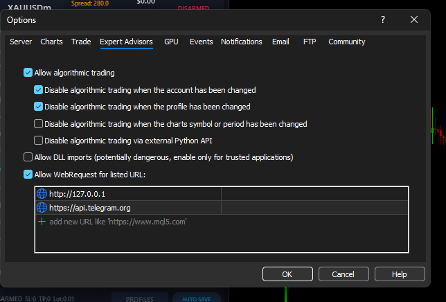
3. Enable Bridge Mode in the EA
Open the EA Source tab. Turn Enable Bridge on and keep the port at 5555 unless support tells you otherwise. The Bridge and EA must use the same port.

4. Log In to Telegram in Bridge
Open Signal Sources in Bridge, enter your phone number with country code, click Add Telegram / Login, enter the Telegram verification code, and enter your 2FA cloud password if Telegram asks for it.
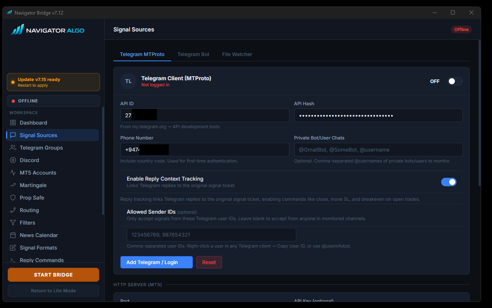
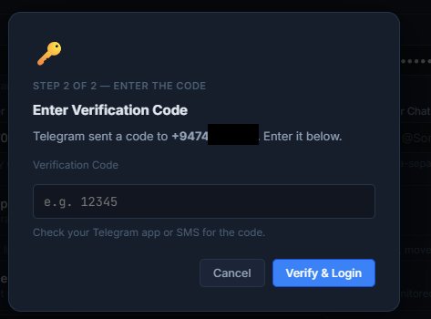
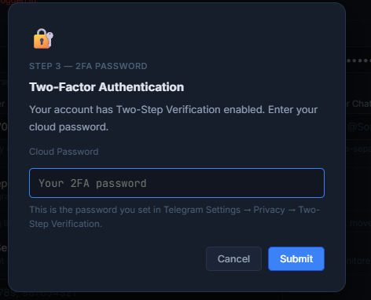
5. Fetch Groups and Assign Them
Open Telegram Groups, click Fetch from Telegram, then select the channels or groups that contain trading signals. If you use multiple MT5 accounts, assign each group to the account that should receive it.

6. Start Bridge and Confirm the MT5 Account Appears
Click START BRIDGE. Then open the Bridge MT5 Accounts page. Your MT5 terminal should appear automatically after the EA sends its heartbeat. Bridge v7.24 keeps recently seen accounts visible for easier routing.

7. Set Lot Size and Risk Rules
Open the EA Lots tab. For a clean first test, use a small fixed lot or per-symbol lots like XAUUSD=0.01,EURUSD=0.01. Confirm your broker accepts that minimum lot size for the symbol.


8. Arm the EA
The EA will not place trades while DISARMED. Click the EA ARM button. DISARMED mode is useful for testing parsing, but it intentionally blocks live execution.

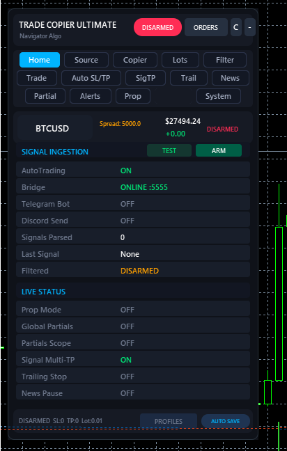
EA Guide
Trade Copier Ultimate can receive Bridge signals, direct Telegram Bot API messages, local copier trades, and manual command signals. For most private Telegram channels, use Bridge Mode.
Bridge Mode
Best for private Telegram groups and per-account routing. Requires http://127.0.0.1 WebRequest.
Bot API Mode
Use only when your own Telegram bot is added to a group that permits bot reading.
Local Copier
Use MASTER and SLAVE mode for terminal-to-terminal copying on the same Windows machine or VPS.
Armed State
ARMED places accepted trades. DISARMED receives and logs signals but blocks execution.
Interactive EA Tabs
Click a tab to understand the important settings and the support checks attached to each area.
Home Dashboard
Shows armed state, current mode, connection state, and the last accepted signal. If the EA says DISARMED or Bridge offline, fix that before checking advanced settings.

Source
Turn on Enable Bridge, set port 5555, and confirm WebRequest includes http://127.0.0.1. If direct Telegram Bot API is enabled, also add https://api.telegram.org.
Copier
Use this only for EA-to-EA copying. If you only copy Telegram signals from Bridge, leave local copier mode disabled unless you intentionally need MASTER/SLAVE behavior.

Lots and Risk Sizing
Choose fixed lot, risk percent, or per-symbol overrides. Error 10014 usually means the broker rejected the volume, so check minimum lot, maximum lot, and lot step for that symbol.
Filters
Controls spread limits, slippage, symbol whitelist/blacklist, cooldown, duplicate filtering, and skip keywords. If a signal is received but skipped, filters are one of the first places to check.

Trade Execution
Controls pending orders, opposite-signal behavior, close commands, modification behavior, and symbol suffix. Keep suffix blank unless your broker requires a suffix and auto-detection did not solve it.

Auto SL/TP
Adds a fallback SL or TP when the signal does not contain one. Use carefully: prop rules often require a real SL, but fallback values must still respect the broker's minimum stop distance.

Signal TP Splitting
Reads TP, TP1, TP2, and TP3 from the incoming signal and can split the trade into separate positions. Current signal TP extraction supports up to three targets; TP4+ should not be expected to create extra signal legs.

Trailing Stop
Moves SL after a position reaches your configured profit threshold. Trailing only manages positions with this EA's magic number.

News Pause
Pauses new entries around selected economic calendar events. If a valid signal is skipped during news time, this setting may be the reason.

Partial Close
Automatically closes part of a position at pip milestones and can move SL after each milestone. This is separate from Signal TP splitting.

Alerts and Broadcast
Controls sounds, popups, and optional broadcast of copied trades to your own Telegram or Discord destinations.

Prop Firm Protection
Can require SL, limit daily drawdown, restrict open positions, and stop trading after risk limits are hit. If Prop Firm Mode is enabled, missing SL signals are intentionally rejected.

System
Set magic number, diagnostics, report logs, restart behavior, and broker suffix. For troubleshooting, enable diagnostic logs only when needed, then send the relevant log lines to support.

Safe First Test
- Use a demo account or very small fixed lot.
- Keep only one simple Telegram signal group enabled.
- Send or wait for a clean test signal such as
BUY XAUUSD SL 2300 TP1 2310. - Check Bridge Signal History first, then MT5 Experts if the trade does not open.
- Only add more groups, risk features, or format profiles after the simple path works.
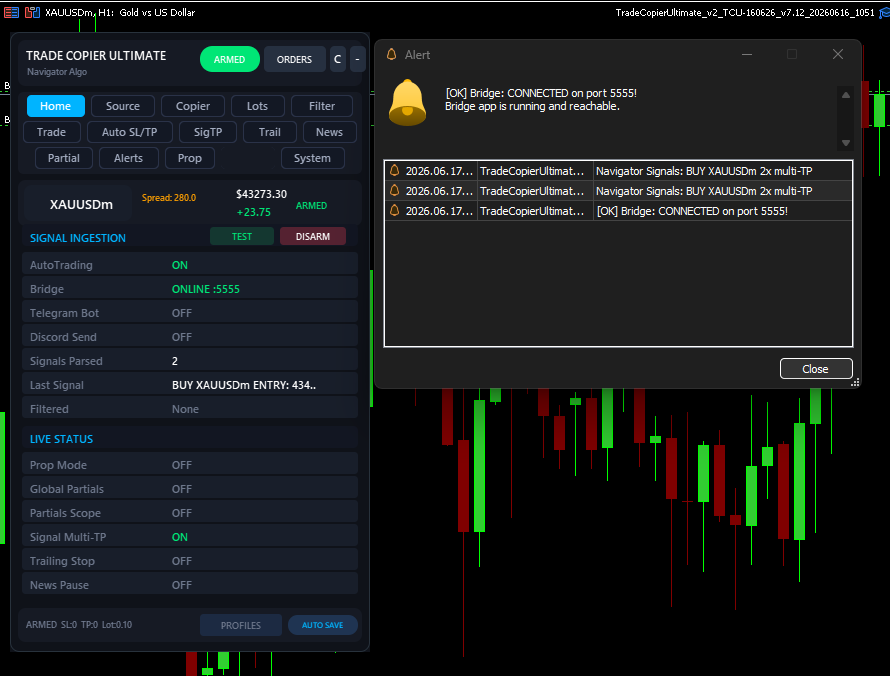
Bridge Guide
NTS Super Bridge receives signals from Telegram, Discord, files, or API, normalizes them, routes them to selected MT5 accounts, and exposes the queue that the EA polls locally.
Signal Sources
Telegram MTProto for private groups, Telegram Bot API for bot-readable groups, Discord, file watcher, and REST API.
Routing
Assign groups globally or per MT5 account. Each connected EA is detected by heartbeat.
Normalization
Symbol aliases, broker suffix detection, filters, duplicate blocking, and optional Format Profiles.
Signal Sources
Telegram MTProto is the usual method for private channels because it logs in as your Telegram account. Telegram Bot API only works where your bot can read messages. Do not enable both for the same group unless you intentionally want two ingestion paths and know how duplicate filtering will behave.

Telegram Groups and Per-Account Routing
After fetching groups, select the source groups that contain signals. When multiple MT5 accounts are connected, assign each group to the correct account. If no account appears, confirm the EA is running, Bridge mode is on, and the port matches.
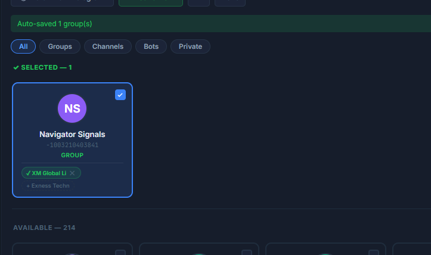
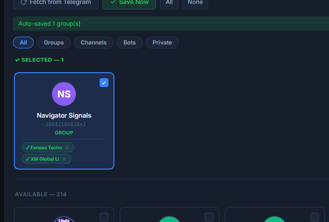
MT5 Accounts, Heartbeats, and Drawdown Stop
The Accounts page shows connected MT5 terminals, broker, account number, online state, detected suffix, and per-account protection settings. Bridge v7.24 keeps recently seen accounts visible for 24 hours so routing does not disappear after a short idle period.
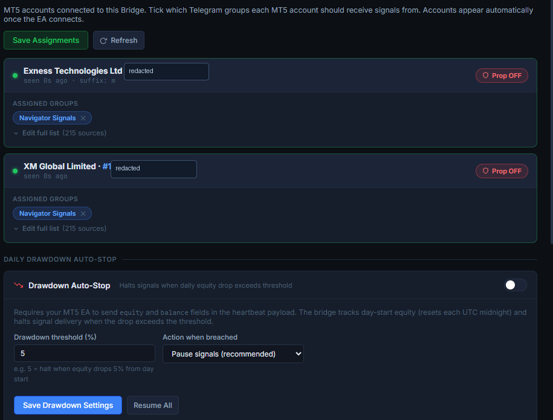
Broker Suffix and Symbol Mapping
Different brokers name the same symbol differently: XAUUSD, XAUUSDm, XAUUSD+, EURUSD.r. Bridge detects suffixes from the EA's Market Watch list and applies the account's suffix automatically when routing.
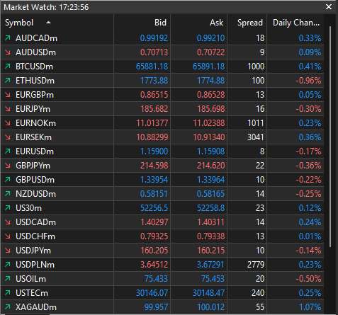
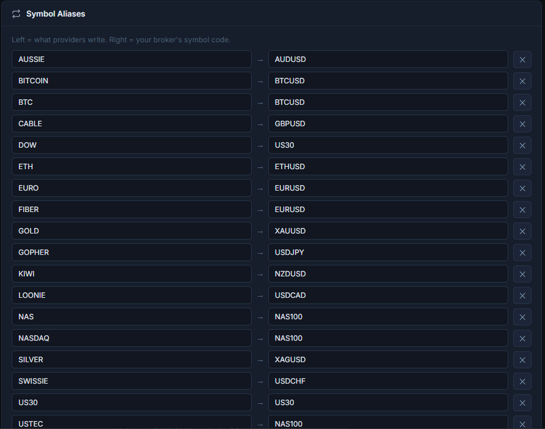
When to Use Aliases
Use aliases when the provider uses a different base symbol, not just a suffix. Examples: GOLD -> XAUUSD, US30 -> DJ30, OIL -> USOIL. Use suffix settings when the broker adds text to the end of normal symbols.
Signal Formats and Format Lab
Bridge parses standard BUY/SELL, SL, TP, pending order, breakeven, close, and modification messages. For unusual providers, use Signal Formats and Format Lab Preset to rewrite only that provider's format before parsing.
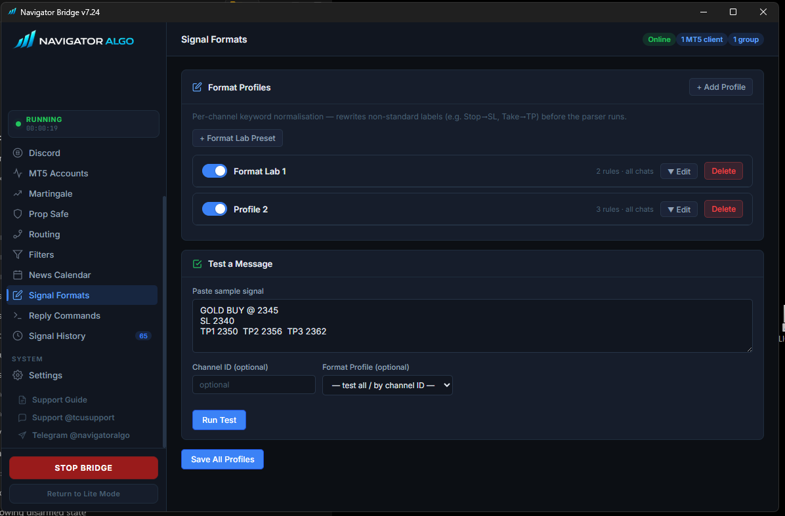
Formats That Usually Work Without a Profile
Clean signals should include direction, symbol, optional entry, SL, and up to three TP targets. These examples are the easiest for Bridge and EA to read:
Market Order
BUY XAUUSD 2350 SL 2338 TP1 2360 TP2 2372 TP3 2385
Pending Order
SELL LIMIT EURUSD 1.0850 SL 1.0900 TP1 1.0790 TP2 1.0750
When You Need a Format Profile
Create a profile when the provider uses symbols, separators, emojis, labels, or spelling that the parser should not globally accept for every other channel.
Raw Provider Message
✅#XAUUSD_BUY 2350:00 Sl@2338 Tp-1@2360 Tp-2@2372 Tp-3@2385
What the Profile Should Produce
BUY XAUUSD 2350 SL 2338 TP1 2360 TP2 2372 TP3 2385
How to Add Your Own Signal Format
- Open Bridge and go to Signal Formats.
- Click + Format Lab Preset.
- Paste the exact raw signal text from Telegram into the test box. Do not retype it manually if you can copy it.
- Add rewrite rules for the parts that are unusual. For example, rewrite
BUYYtoBUY,SELLLtoSELL,Sl@toSL, andTp-1@toTP1. - If the provider writes symbols in a strange way, normalize the symbol text before parsing. Example:
#XAUUSD_BUYshould becomeXAUUSD BUY. - Run the test. Confirm Bridge detects the correct direction, symbol, SL, and TP1-TP3.
- Assign the profile to the source channel or account that uses this format. Avoid making it global unless every provider uses the same style.
- Save the profile, then send or wait for a new signal. Old messages already processed by duplicate filtering may not fire again.
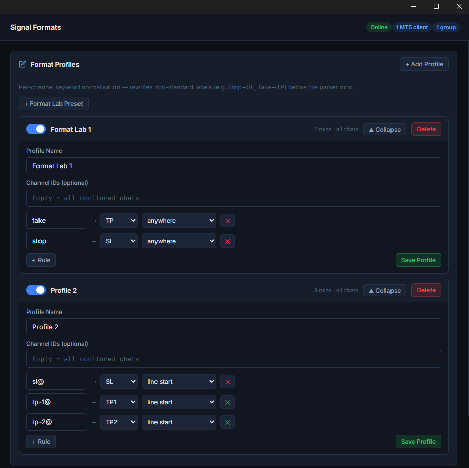
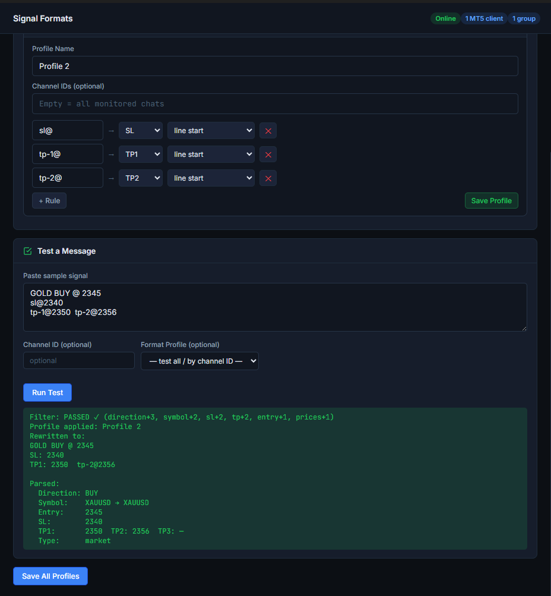
Useful Rewrite Examples
Direction Cleanup
BUYY -> BUY _BUY -> BUY SELLL -> SELL Sell Now -> SELL
SL and TP Labels
Sl@ -> SL SL_ -> SL Tp-1@ -> TP1 Take Profit -> TP
Symbol Cleanup
#XAUUSD_BUY -> XAUUSD BUY GOLD BUY -> XAUUSD BUY USOIL BUY 🌸 -> USOIL BUY
Repeated TP Lines
TP 2360 TP 2372 TP 2385 becomes: TP1 2360 TP2 2372 TP3 2385
Sample Formats to Test
These are good samples to paste into the Signal Formats tester when building or checking a profile:
Gold Noise Format
XAUUSD BUYY 2350 2348 TP¹ 2360 TP² 2372 TP³ 2385 SL_2338
Hashtag Format
✅#XAUUSD_BUY 2350:00 Sl@2338 Tp-1@2360 Tp-2@2372
Oil Format
USOIL BUY 🌸 Entry 80.22 Take 86.36 Stop 76.12
Text Direction Format
Sell XAUUSD Now Stop Loss 2362 Take Profit 2340 Take Profit 2325
Duplicate Filter
Duplicate filtering blocks repeated messages so the same signal does not open twice when it is forwarded through multiple channels or edited by the provider. Turn it off only for controlled testing. In Bridge v7.24, the duplicate filter toggle applies live without restarting Bridge.
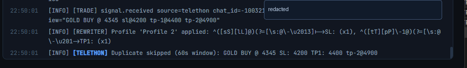
Signal History
Signal History is the first place to look when a trade does not open. It shows what Bridge received, how it parsed the signal, which symbol it routed, and whether it was filtered or queued.

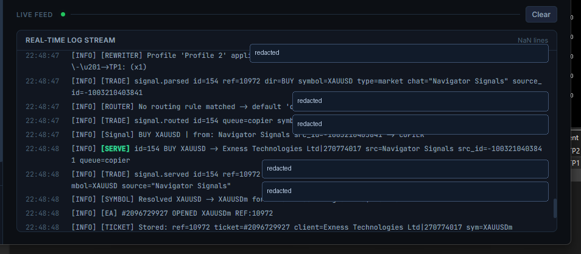
Updates and Telegram Session Reset
Bridge checks for updates and stages them safely. When an update is ready, click restart from the Bridge UI and let the updater finish. Do not close the updater window early.
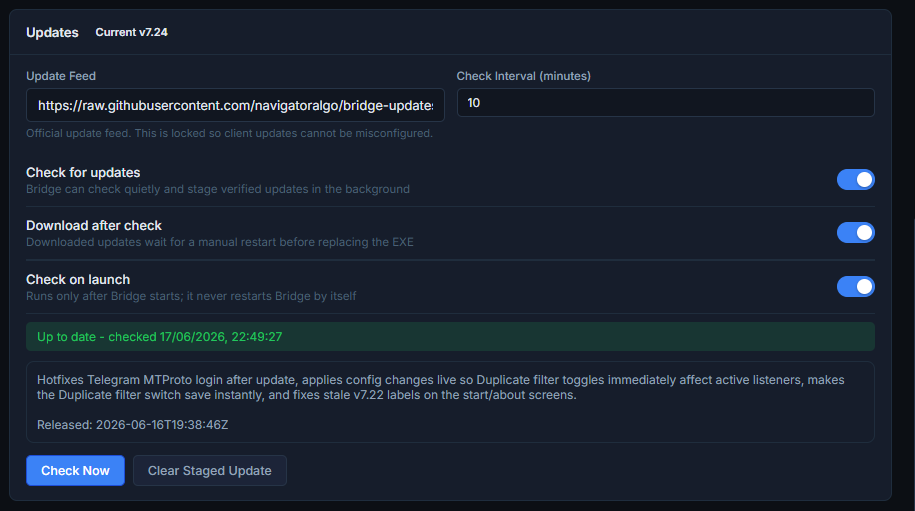
too many values to unpack, open Signal Sources -> Telegram MTProto, click Reset, then log in again. Newer Bridge builds reset incompatible session files more gracefully.
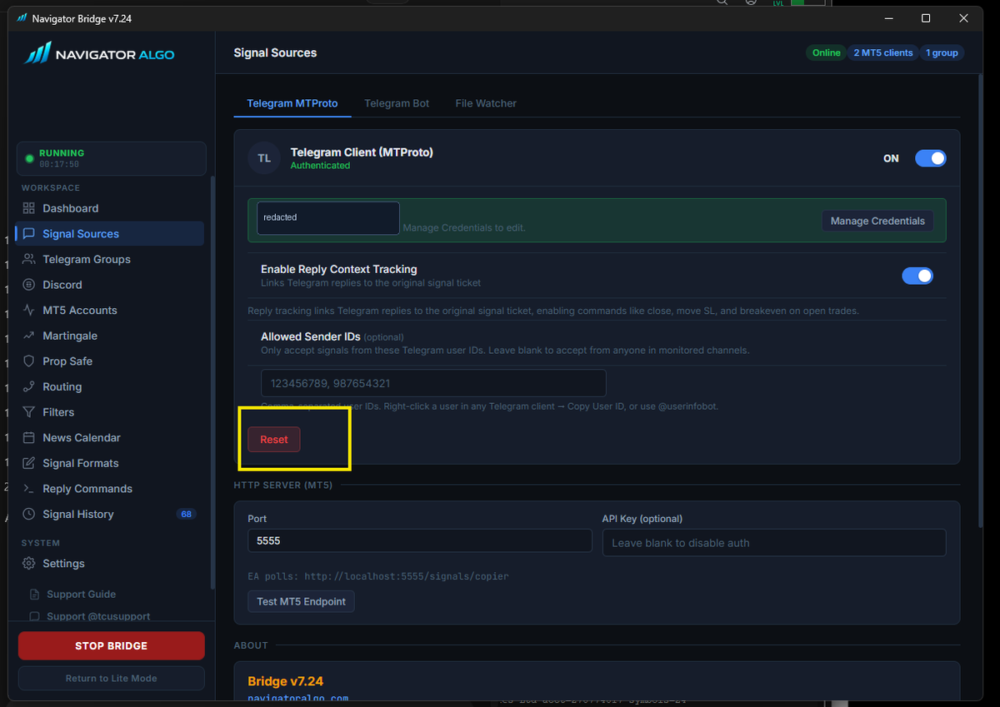
Trade Did Not Open: Fast Diagnosis
Use this checklist in order. It narrows the issue faster than changing random settings.
Is Bridge Running?
The Bridge button should show running/stop state, and Signal History should receive new messages.
Is EA Online?
Bridge Accounts should show the MT5 account. If not, check EA Bridge mode, port 5555, and WebRequest.
Is EA Armed?
If the EA is DISARMED, it intentionally ignores live execution.
Was the Group Assigned?
Telegram group must be selected and routed to the target MT5 account.
Did Bridge Parse It?
Check Signal History. If symbol/direction/SL/TP are empty, add a Format Profile or alias.
Did a Filter Block It?
Check duplicate filter, cooldown, whitelist, blacklist, news pause, prop SL requirement, spread, and max open positions.
Did Broker Reject It?
Open MT5 Experts and Journal. Broker errors like 10014, 10016, 10021, and 10027 tell you exactly what failed.
Is Symbol Tradable?
Confirm Market Watch has the exact tradable broker symbol and suffix.
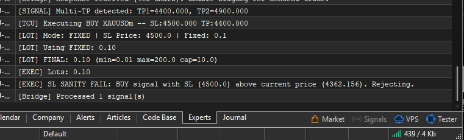
Telegram Problems
Groups Do Not Fetch
Confirm API ID, API Hash, phone number, and Telegram login. Start Bridge once after login, then fetch again. If still broken, click Reset and log in again.
Signals Not Arriving
Confirm the selected source group is the one receiving the actual signal. Some channels forward from hidden linked groups; fetch and select the group that receives the visible message.
Code or 2FA Fails
Use the code from Telegram itself, not SMS unless Telegram sends SMS. If 2FA is enabled, enter the Telegram cloud password.
Session Schema Error
Click Reset in Telegram MTProto, then authenticate again. This clears old Telethon session files from previous Bridge versions.
Symbol, Suffix, and Error 10021
If Signal History shows the signal but MT5 rejects it, symbol mapping is a common cause. Open Market Watch and identify the exact tradable symbol. If the provider says GOLD but your broker trades XAUUSD+, use alias GOLD -> XAUUSD and suffix +.
- Open MT5 Market Watch with Ctrl+M.
- Right-click and choose Symbols or press Ctrl+U.
- Find the exact tradable symbol, including suffix.
- Check Bridge Accounts for auto-detected suffix.
- Add aliases only when the base symbol name differs.
Common MT5 Error Codes
These errors are normally broker/platform rejections returned to the EA. They are not always Bridge bugs.
| Error | Meaning | Fix |
|---|---|---|
| 10014 | Invalid volume | Lot size is too small, too large, or not on the broker's lot step. Check fixed lot, per-symbol lot, risk percent, min lot, max lot, and lot step. |
| 10015 | Invalid price | Usually pending order price is too close, stale, or already crossed. Wait for a fresh signal or disable pending handling for that provider. |
| 10016 | Invalid stops | SL/TP is too close to entry/current price. Increase stop distance or check broker StopLevel. |
| 10019 | Not enough money | Free margin is too low. Reduce lot size or risk percent. |
| 10021 | Trading disabled / wrong instrument | Use the exact tradable symbol/suffix from Market Watch. The visible naked symbol may be read-only. |
| 10027 | AutoTrading disabled | Enable MT5 Algo Trading, allow live trading in EA common settings, and arm the EA. |
| 10031 | No connection | MT5 lost broker connection. Reconnect terminal/VPS and check broker server status. |
| 10033 | Market closed | The symbol is outside trading hours, daily break, weekend, or broker maintenance. |
Signal Format Problems
If Bridge receives a message but cannot identify direction, symbol, SL, or TP, the provider format may need a profile. Build a Format Lab preset for that channel instead of forcing global parser behavior.
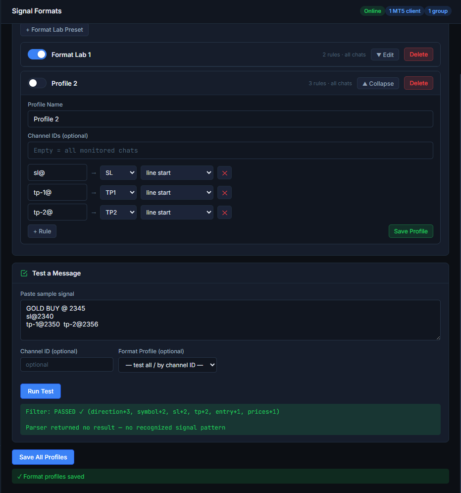
Symptoms
- Signal History has blank direction or symbol.
- TP lines are not detected.
- Provider writes
BUYY,SL_,Tp-1@, or hashtag symbols.
Fix
- Create a Format Lab preset.
- Test the exact raw signal text.
- Assign the profile to the correct channel.
- Save profile and send a new signal.
When Filters Block a Good Signal
Filters are safety systems. If you think a good signal was skipped, check these items before assuming the EA failed:
- Duplicate filter: blocks repeated same signal text within the duplicate window.
- Cooldown: blocks repeated same symbol/direction within the cooldown period.
- Prop mode: may reject missing SL, too many positions, or daily drawdown breach.
- Whitelist/blacklist: can block symbols not listed or explicitly excluded.
- News pause: blocks new entries around selected high/medium impact news.
- Spread/slippage: blocks entries when broker conditions are outside your limits.
Contact Support
Use the guide checks first when possible, then contact support with the screenshots and details below. For the fastest help, include the raw signal text, Bridge version, broker symbol, and MT5 Experts error if there is one.
Message direct support for setup, Bridge, EA, and account-specific routing issues.
TCU Support @tcusupportUse this for Trade Copier Ultimate support cases and troubleshooting follow-ups.
Telegram Channel @navigatoralgoFollow the official Navigator Algo channel for product updates and announcements.
WhatsApp +94 741 127 003Contact support on WhatsApp if Telegram is not convenient.
Before Contacting Support
Most issues are solved faster when support can see the full path: Telegram message -> Bridge parse -> MT5 account route -> EA execution -> broker response.
Send These Screenshots
- Bridge Dashboard showing running/offline state.
- Bridge Signal History for the failed signal.
- Bridge MT5 Accounts page showing the target account.
- EA Home tab showing ARMED/DISARMED and Bridge status.
- MT5 Experts tab lines around the signal time.
Send These Details
- Bridge version shown in the app.
- Broker name and account type.
- Exact raw signal text copied from Telegram.
- Expected symbol and actual broker symbol in Market Watch.
- Whether this is demo, live, or prop challenge.
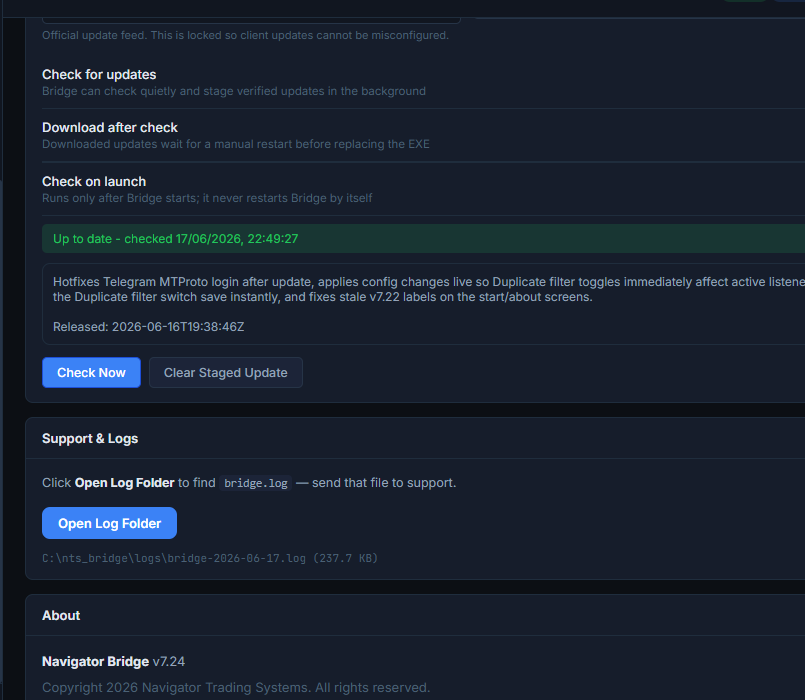
Support Message Template
Copy this structure when opening a support case. It gives support the full path from source message to broker response.
Bridge version: EA version: Broker + account type: MT5 account number: Signal source group/channel: Raw signal text: Expected trade: What happened instead: MT5 error code, if any: Screenshots attached: Dashboard, Signal History, MT5 Accounts, EA Home, MT5 Experts
Known Limits and Expectations
- Signal TP splitting supports up to TP1, TP2, and TP3. Extra TP lines may be normalized for readability but should not be expected to create more signal TP legs.
- Provider-specific strange formats should be handled with Format Profiles, not global parser changes.
- Telegram API ID and API Hash come from the customer's Telegram account. Support should never ask for Telegram login codes or passwords.
- Broker rejection errors must be checked in MT5 Experts/Journal because Bridge can deliver a valid signal that the broker later refuses.
- For prop accounts, drawdown and SL-required settings may intentionally block signals that look valid.